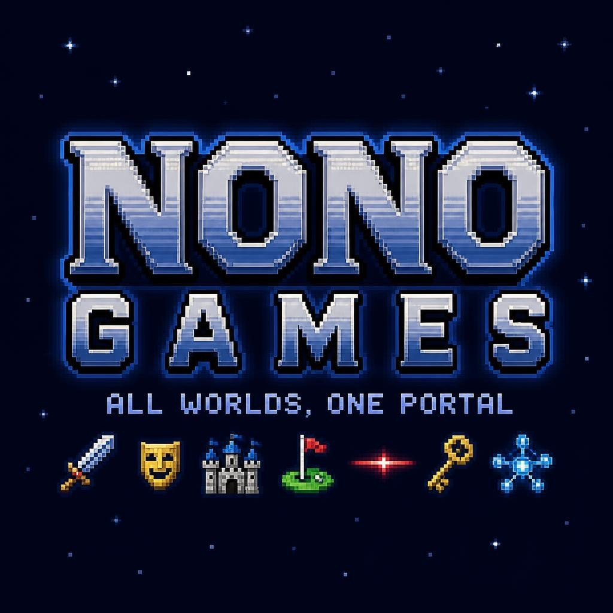
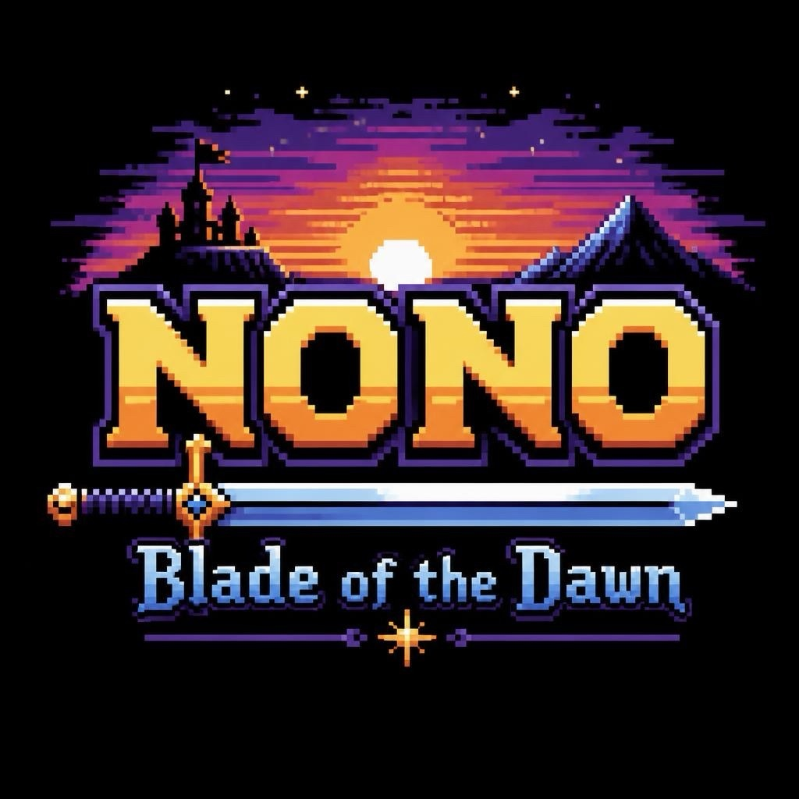
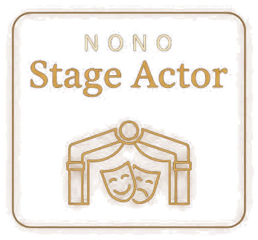
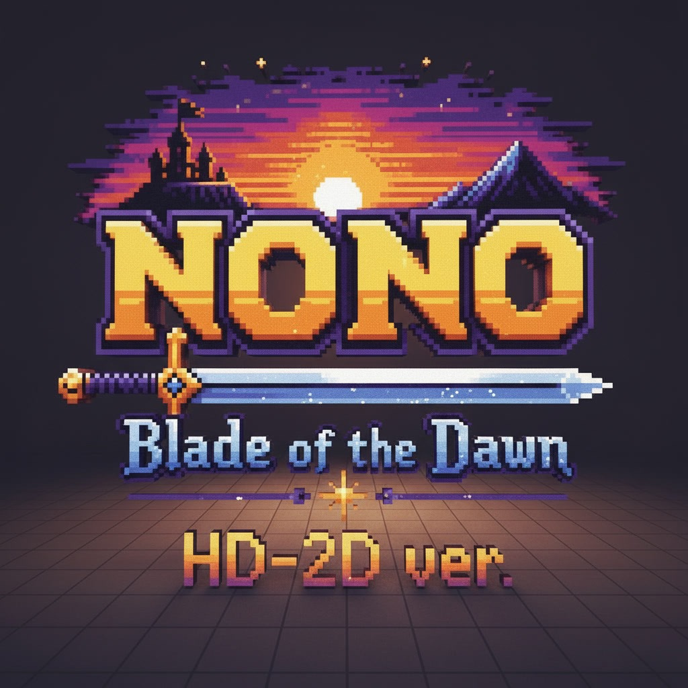
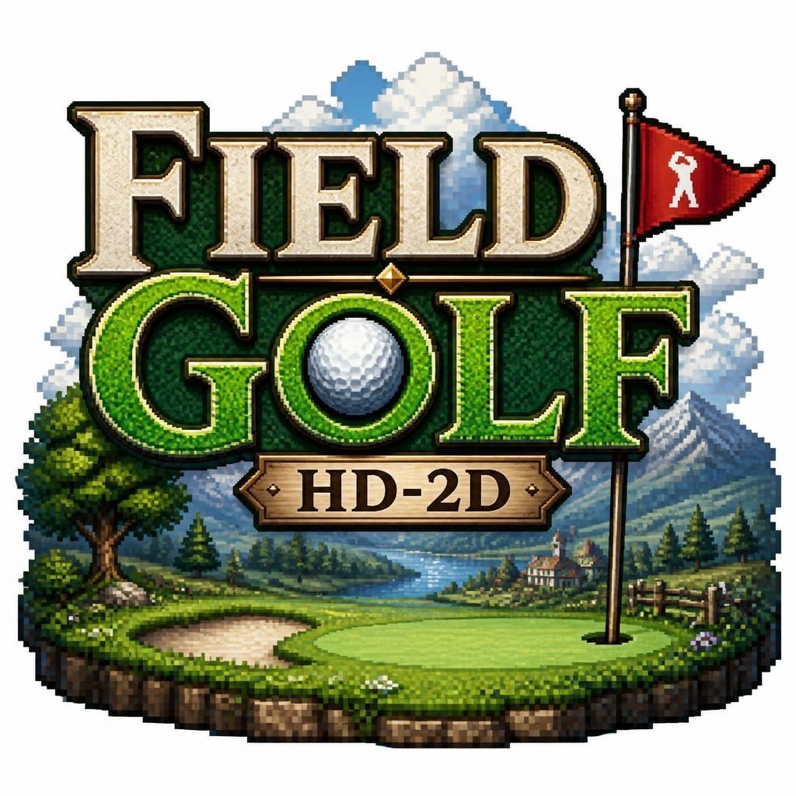
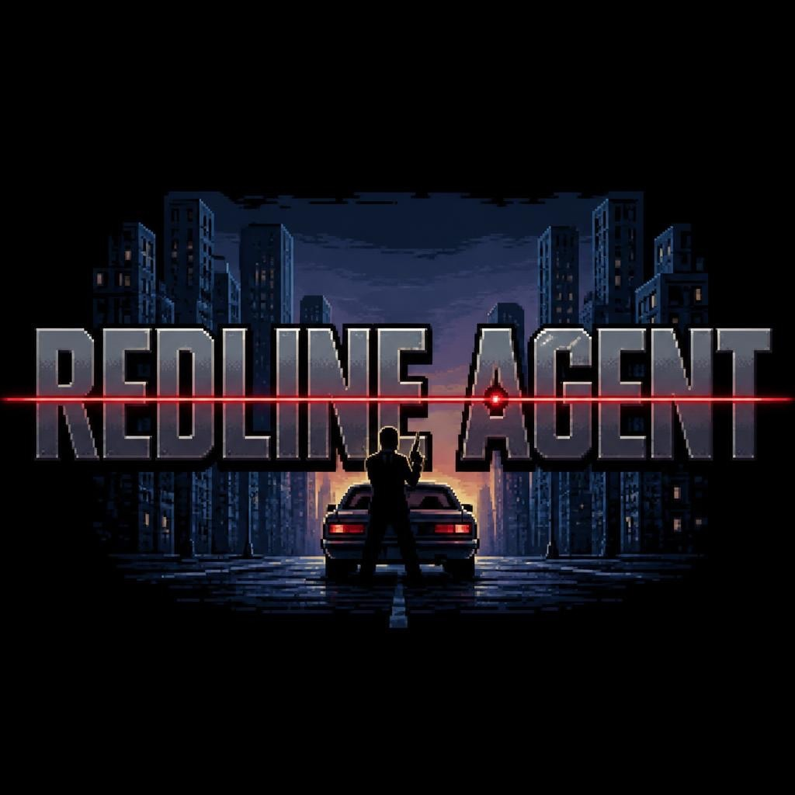
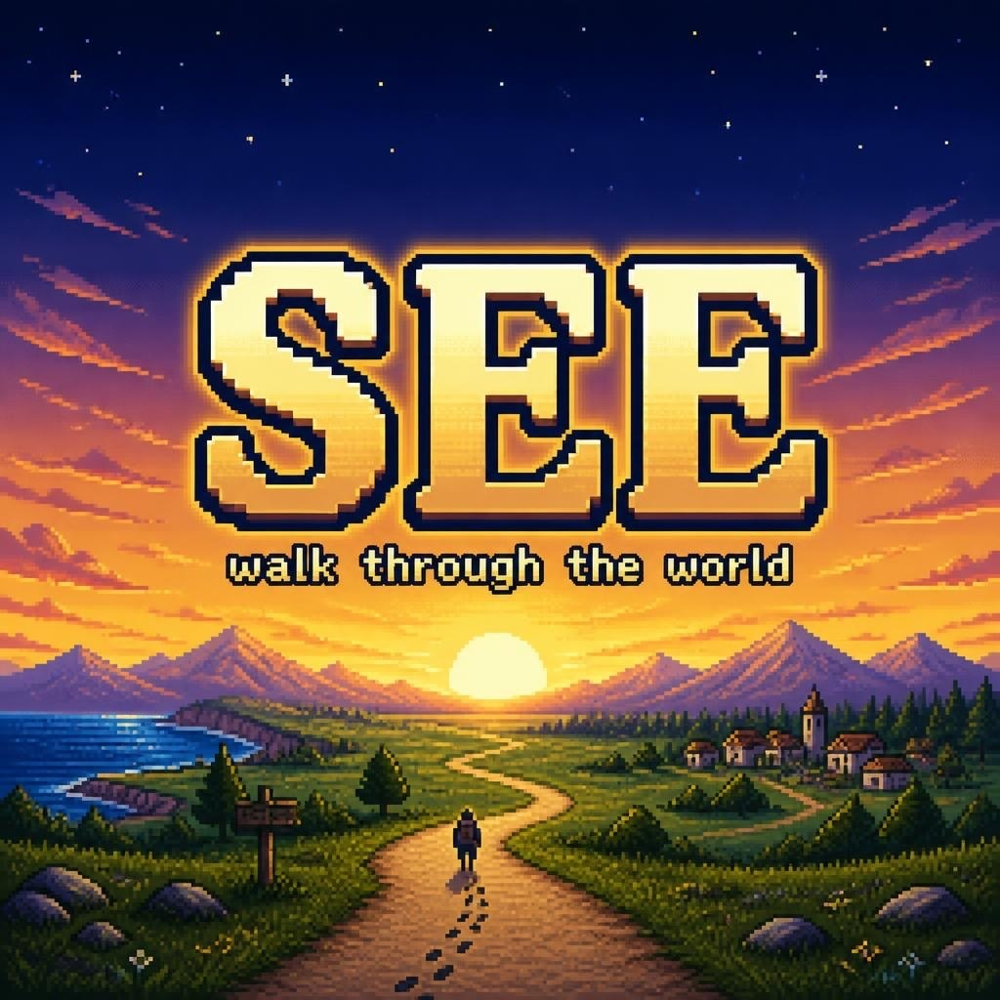
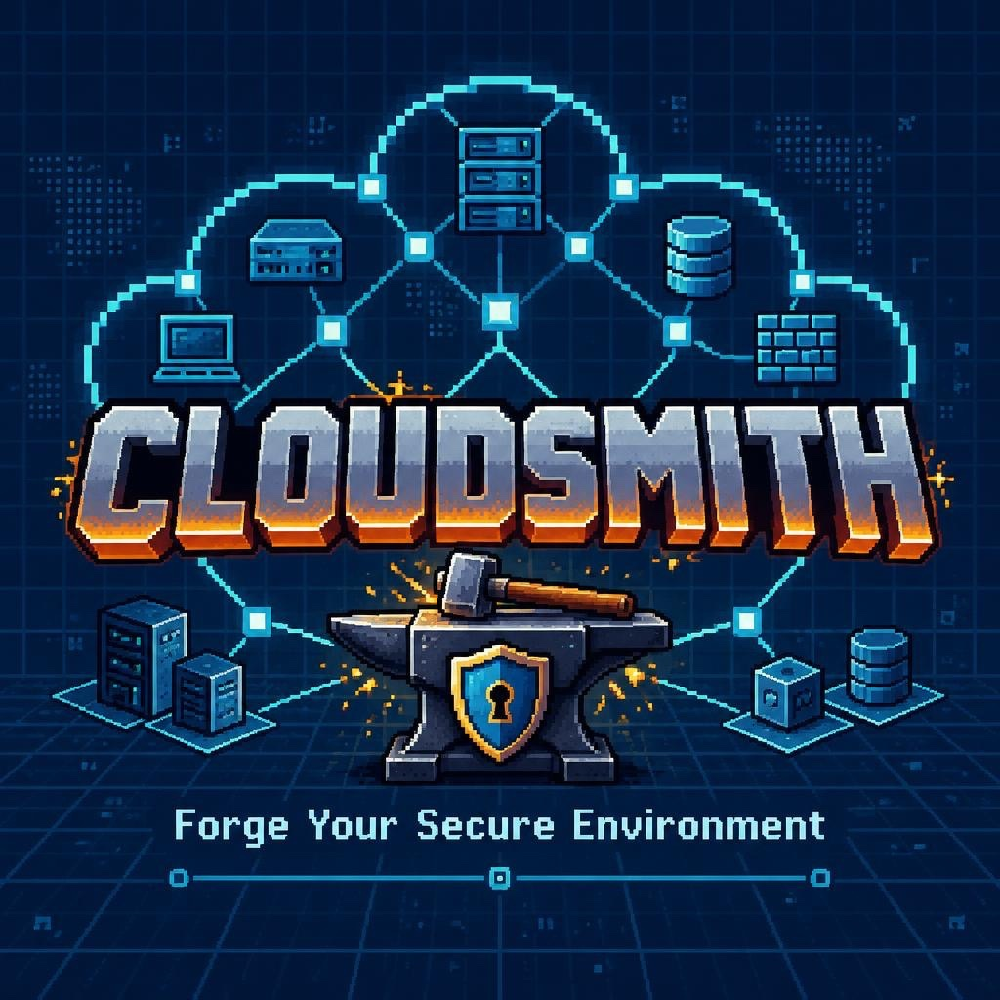
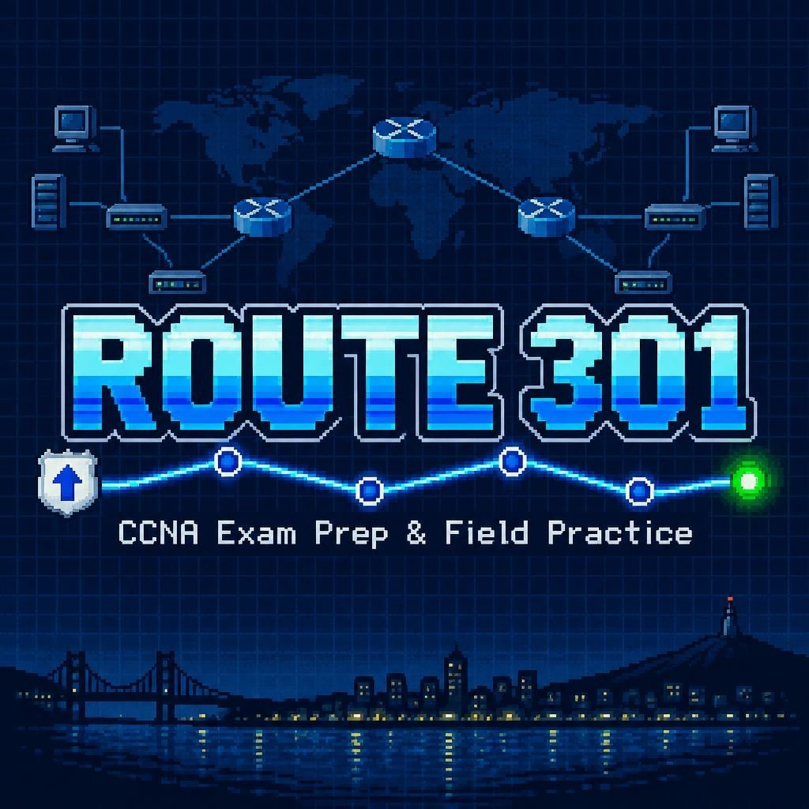
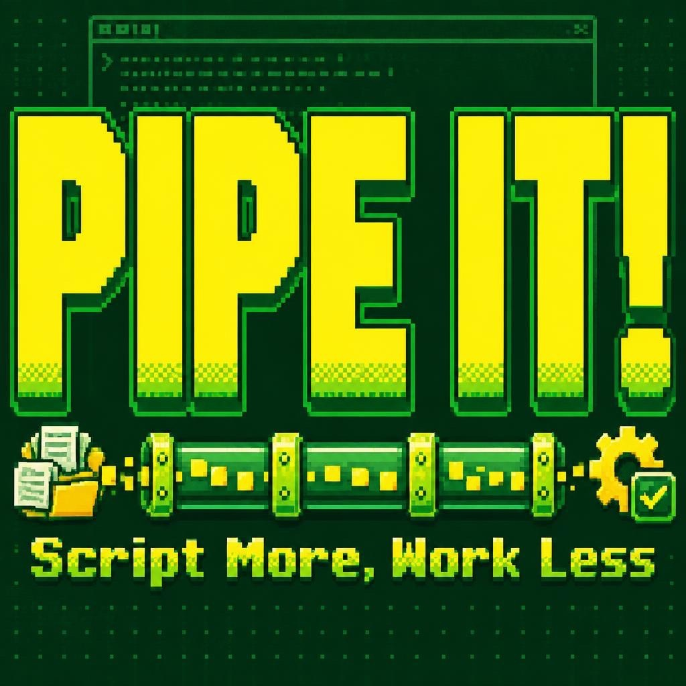

NONO GAMES

すべての世界への入口
タップすると、そのままゲームが始まります。

NONO: Blade of the Dawn
霧に沈んだ十六の地を、光の剣とともに巡るアクションRPG。ライバルに勝つたび、剣が育つ。
▶ あそぶ
NONO Stage Actor
nono と仲間たちが名作を演じるストーリーテラー。『藪の中』『死神』『芝浜』など上演中。
▶ あそぶ
NONO: Blade of the Dawn — HD-2D lite
本編の世界を HD-2D で作り直す試作版。ドット絵のキャラが 3D の世界を歩く。
▶ あそぶ
FIELD GOLF
フィールドで打つ、爽快感いちばんのゴルフ。全18コース、打ったらすぐ次のショットへ。
▶ あそぶ
REDLINE AGENT
レイが主人公のカバーシューター。スワイプで物陰を移り、赤いレーザーの敵を撃つ。
▶ あそぶTHE CAPER — Clockwork Loot & Logic
スパイ SECOND のからくりパズル。下見と実行の二段構えで挑む、全11作戦。
▶ あそぶFAULT LINE — DESTINATION: INVESTIGATION
観測だけを頼りにネットワーク障害の原因を特定する診断パズル。全48シナリオ。
▶ あそぶ
SEE — walk through the world
nono が広い世界をただ歩いて旅する、戦わないRPG。住人と話し、噂を確かめ、行きと帰りで変わる景色を見る。
▶ あそぶ
CLOUDSMITH — Forge Your Secure Environment
クラウドとネットワークの環境を、カードで組み立てて守る構築シミュレーション。基礎編・入門編・実践編（グラフ盤面）・研鑽編（インシデント対応）の試作を公開中。
▶ あそぶ
ROUTE 301
CCNA（200-301）v2.0 の試験対策アプリ。全200問（図解・穴埋め・コマンド組み立てのラボ形式つき）の「試験対策編」に本番形式の模擬試験と復習モードを備え、現場のユースケースに対処する「現場実践編」44件を公開中。
▶ あそぶSELECT * — Every Quest Is a Query
ワードタイルをドラッグ＆ドロップで並べてSQLを組み立て、クエストを解くパズル。冒険者ギルド、宇宙貨物船、古代遺跡など、テーマごとに世界が変わる。全6テーマ・全90問（上級クエスト追加）を公開中。
▶ あそぶ
PIPE IT! — Script More, Work Less
PowerShell で運用作業をこなすゲーム。最初はコマンドを手打ちし、スクリプトを組めるようになると、その作業は次から自動化される。ファイル整理の5段階（パイロット）を公開中。全10テーマ×5段階・全50問へ広げていく。
▶ あそぶ